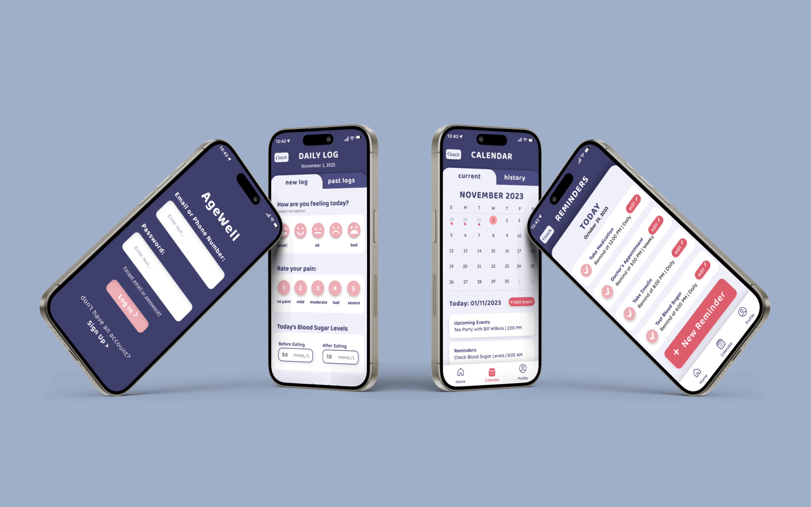

AgeWell App
Final Team Assignment at SFU

Project Overview
In a group of three, we were tasked with creating a mobile application for users 75 years and older, based on thorough user research and testing. My group created an app called “AgeWell” that assisted elderly users with remembering personal tasks, events and symptoms to report to their caretakers and or doctors.
Process Analysis
The process started by researching articles that discussed the needs of elderly users when using mobile apps, before making a persona based on that research. As a group we decided that it would be useful to create an app that allowed users to create reminders, access a calendar and tracked their daily symptoms, all in one place. We created a styleguide including a colour palette and typeface that is highly visible for elderly users and created wireframes, in which I gathered reference images, inspirational pieces and further research into mobile applications/attributes best suited for elderly users. We used Protopie to create a functioning prototype to use for user testing, I helped to create various visual elements used in our final prototype and designed the interactions on our prototype.
We conducted user tests with our desired audience age range and received feedback before applying necessary changes. With my user-tester I asked questions about their previous experiences with health/reminder related apps, and instructed them to move through our prototype and complete a list of given tasks, while I observed them and listened to their thought process and took notes.
Testing sessions closed with follow-up questions to define areas with usability issues. Our results showed that there was a lack of instruction in the beginning, leaving users confused in terms of what they were meant to do with app, resulting in the implementation of a tutorial after onboarding. Users had difficulty differentiating information on different pages as they looked too similar. The layout of pages such as the homepage reminders were simplified to look different from the stand-alone reminders page.
We created a site (linked in Project Artifacts ) to advertise our app and showcase our process in detail.
Project Conflicts and Solutions
We had difficulty implementing features that were highly visible for users and easy to interact with on mobile. During our user tests we realized that some elements were too small for users to press if their hands are less mobile, and we were unsure how to design bigger elements in a way that still looked nice. It was difficult for me to leave behind what I was used to designing, such as small minimalistic elements for users who had no issues with visual elements, or mobility/accessibility. To fix this issue I did more research with my group on effective methods for assisting elderly users on mobile apps. I would definitely try to create a concept for an app that went beyond healthcare or memory loss, as many of my peers created apps that had the same concept as AgeWell.
Project Reflections
As a result of this project I was able to learn and develop my skills in user testing and interviewing. Through this project I was able to conduct user testing and interviews for the first time, in which I learned that in order to have a successful user test as the interviewer/facilitator you have to come prepared with good and thought-provoking questions (i.e. no questions that can be answered with a simple yes or no), and be able to detach yourself from the product being tested as to not interfere with the tester when they critique the product or get stuck.
I also found that designing an app for elderly users was a challenge as previously I was not used to simplifying an interface down to only what is necessary to communicate ideas to users, as older users have a difficult time with excessive icons and small details.
Reflecting on this project, I would definitely try to create a concept for an app that went beyond healthcare or memory loss, as many of my peers created apps that had the same concept as AgeWell. I would also try to make the screens less busy to make it easier to elderly users to navigate, possibly only allowing one user input on the screen at a time in the daily log, to make it less overwhelming.
Project Roles
Visual Design, Styleguide Creation, Prototyping, User-Testing
Project Tools
Protopie, Figma
Project Members
- Areeba Ali
- Karina Shuen
- Lauryn Yau